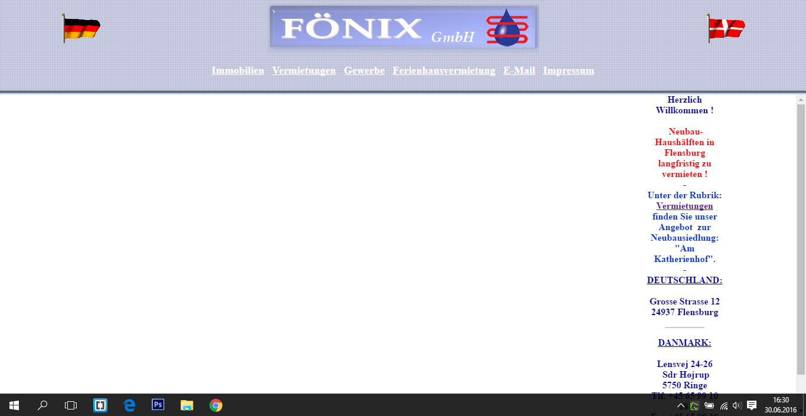
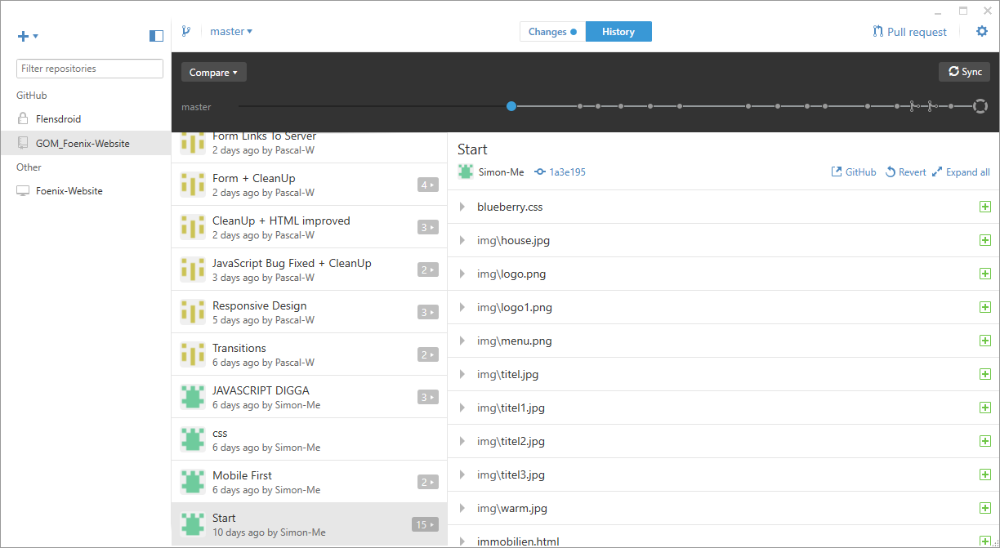
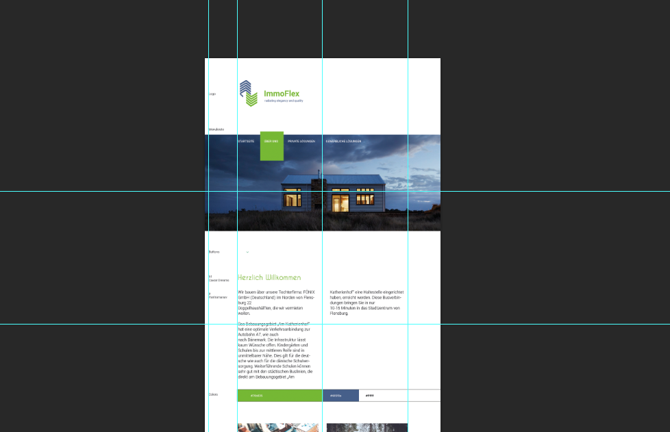
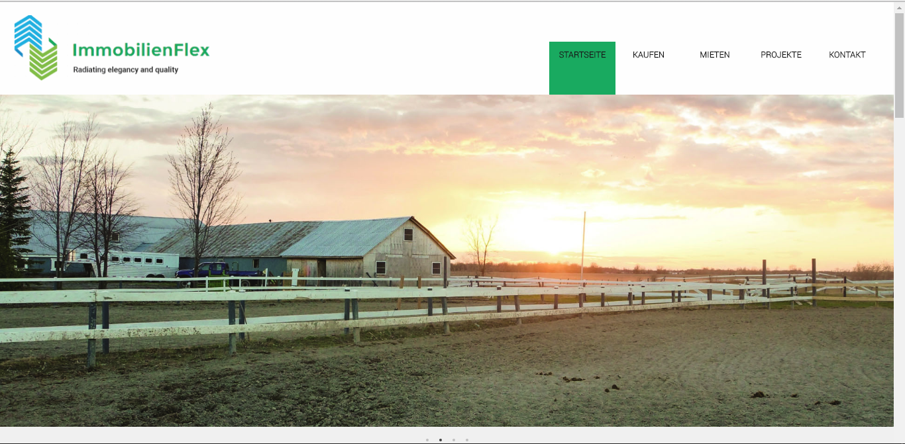
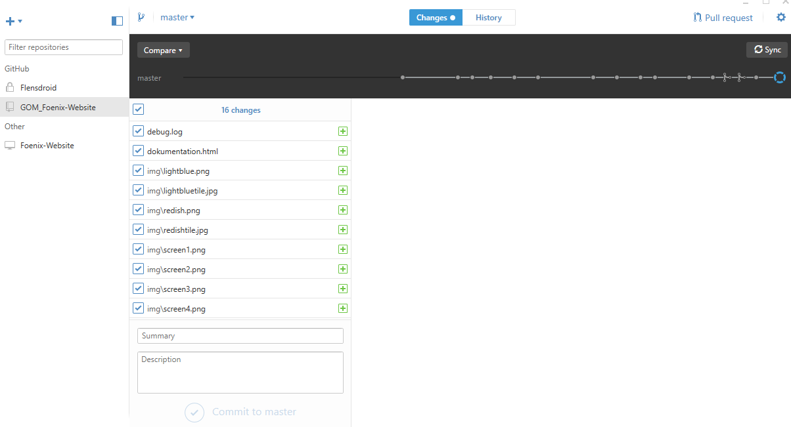

01.06.2016
Zunnächst haben wir uns grundlegende Überlegungen gemacht, was für eine Website wir machen möchten. Da die Foenix GmbH einem Bekannten gehört, und diese bisher lediglich eine sehr obsolete Website hatte, haben wir uns dazu entschlossen hier ein Relaunch mit aktuellem Content und einem zeitgemäßen Design zu erstellen.
03.06.2016
Um herauszufinden, was die Unternehmensziele der Foenix GmbH sind, haben wir uns mit den Verantwortlichen zusammengesetzt, und das neue Konzept und Design durchgesprochen. Hierbei haben wir ebenfalls erklärt, was wir vorhaben, welchen Content wir benötigen und ob bereits Content vorliegt. Da sich bisher niemand über eine coorperate identity Gedanken gemacht hatte, haben wir uns im Laufe des Gesprächs ebenfalls dazu entschlossen, ein neues Logo zu konzipieren, da sich das alte nicht in unser Design einbetten ließ.
10.06.2016
Wir haben uns über unser Projektmanagment Gedanken gemacht und uns dazu entschlossen, Github zu verwenden, damit beide Entwickler gleichzeitig an dem Projekt arbeiten können. Hierzu haben wir uns ein neues Repository eingerichtet und uns mit GitHub auseinander gesetzt.
15.06.2016
Wir haben die StyleTiles entworfen. Wichtig hierbei waren uns die Unternehmensziele in Typographie und Farbgebung aber auch in den Schmuckelementen abzubilden. Insgesamt haben wir drei komplette StyleTiles entworfen und uns letzt endlich für das StyleTile "WarmGreen" entschieden.
20.06.2016
Wir haben eine index.html programmiert und das dazugehörige style.css angelegt. Hierbei haben wir noch keine mediaquerys berücksichtigt und primär für ein Handy entwickelt. Navigationsleiste, grundsätzlicher Aufbau und Footer ist fertig und entspricht unserer Planung durch die StyleTiles.
21.06.2016
Wir haben unser Konzept nocheinmal überarbeitet und uns erneut mit den Verantwortlichen von der Foenix GmbH zusammengesetzt, um Inhalte zu bekommen. Ausserdem haben wir die index.html weiter erarbeitet und die mediequerys eingebaut. Nun ist die Website für verschiedene Engeräte optimiert.
25.06.2016
Durch zusätzliche JavaScript-Funktionen kommen wir auch haptisch den Unternehmenszielen sehr nahe. Durch css-transitions und weichen Übergängen der querys ist das Look and Feel ein sehr ruhiges und lässt sich optimal auf verschiedene Geräte anpassen.
27.06.2016
Wir haben die Dokumentation und die Timeline geschrieben.
28.06.2016
Letzte Änderungen wurden gemacht, einige Dinge wurden optimiert und querys, die noch nicht ganz rund liefen wurden optimiert. Zusätzlich wurde die Rechtschreibung überprüft und jede Funktionalität auch ohne Javascript getestet.
